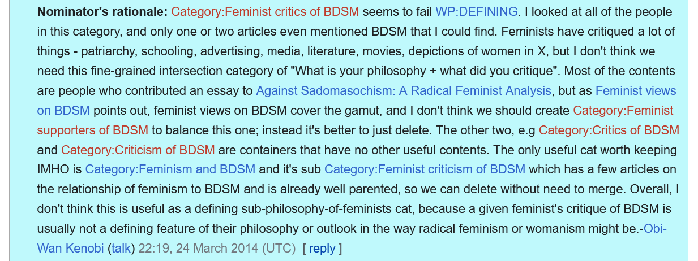

In the “Categorygate” controversy, Amanda Filipacchi criticized Wikipedia editors for moving female writers from the “American novelists” category to “American women novelists.” By relegating women to a more obscure corner of the site, she argued, these contributors were “mak[ing] it harder and slower for women to gain equality in the literary world” (Filipacchi 2013). While originally framed as an issue of miscategorization, the conversation turned to the question: is Wikipedia’s entire categorization system wrong?
Wikipedia editor Obiwankenobi, who nominated the “Feminist critics of BDSM” category for deletion (and consequent removal from tagged pages), contributed to this debate with a quiz to identify biased categorizations of biographical pages. “Take your chances on my quiz - can you categorize without being sexist or racist? It’s hard!” they wrote. In their nomination justification, they similarly argued, “I don’t think we need this fine-grained intersection category of ‘What is your philosophy + what did you critique.’” To Obiwankenobi and many others, it seems categorization is often too blunt a tool to capture the nuances of personal identity.
To some extent, Wikipedia categories are useful for organizing similar pages. But, as James Furner asserts, “every classification scheme is an objective representation of a subjective point of view… Almost necessarily, then, every classification scheme may be interpreted as being biased in some respect, where the bias is the inevitable reflection of designers’ preferences” (Furner 2018, 154). Any categorization system reflects its creators’ beliefs around how things should be classified—which may not align with how those “things” wish to be classified. Duana Fullwiley argues that technology contributes to this brute classification, writing, “It is the twenty-first century and humans are grappling with which features of their identities matter most, and when. Digital tools that fragment aspects of the person are now adopted to better express a limited part of what can, or cannot, be exposed” (Fullwiley 2024, ix). Audre Lorde described herself as a Black, lesbian, mother, warrior, poet—a litany of identities that inextricably shape one another. A category as broad as “African-American poet” or “Lesbian feminist” cannot truly capture her experiences.
If categories are inherently problematic, there’s no use trying to perfect such a system. Instead, emphasis should be placed on individuals’ pages defining themselves. Patricia Hill Collins emphasizes the importance of ongoing dialogue in this process, writing, “Dialogues are essential because no one individual or interpretive community can wrap its arms about the magnitude of intersectionality itself” (Collins 2019, 221). People group themselves or each other with those who have similar experiences, but they should recognize those experiences are never the same.